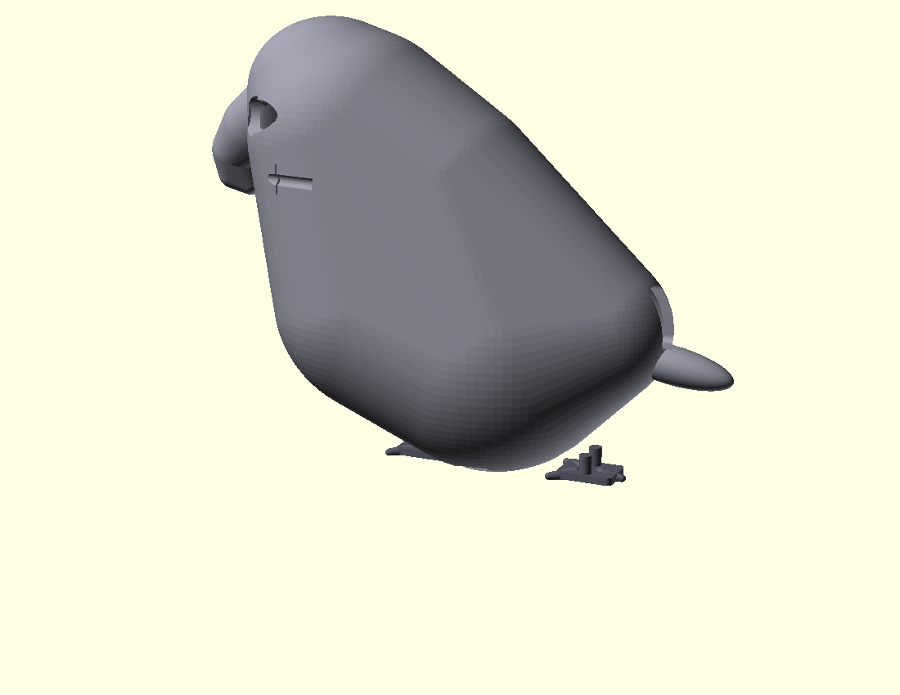
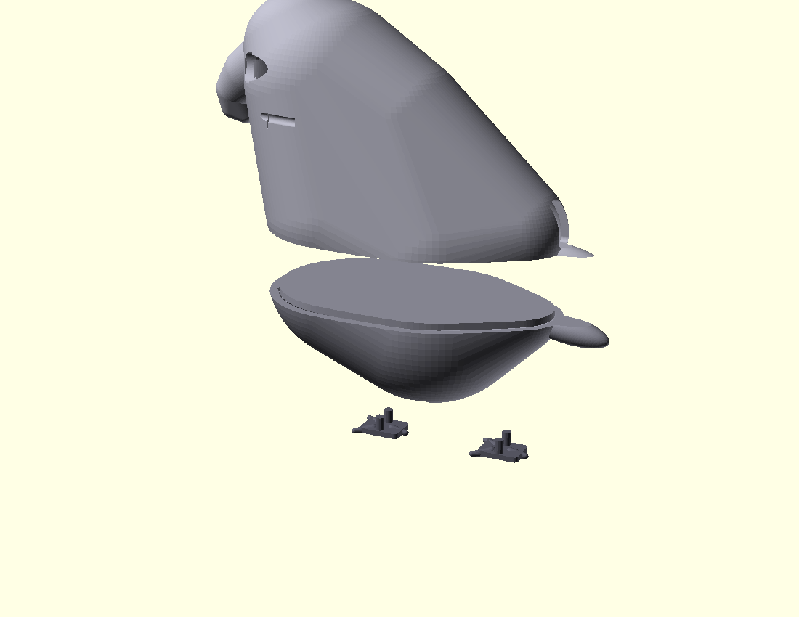

For Tomasz. Day-1 instructions for when parts land (expected Apr 20–24, 2026).
This guide gets you from three paczkomat boxes + a print to a working shoulder-mounted parrot in about 60–90 minutes. No soldering iron needed — Kamami soldered the one unavoidable joint for you. You will need roughly 2 cm² of CA glue and a pair of scissors.
If anything is ambiguous, trust the photos. If the parrot doesn't talk at the end, jump to Troubleshooting.
Project root on the Mac Studio: /Users/kolinko/claude/varia/parrot/
Admin panel: http://localhost:8686/parrot (on the Mac itself) · https://kex7m.effort.ws/parrot (same panel via Cloudflare tunnel, works from anywhere).
The sections below are written as reference material. The order you actually execute on Day 1 is:
./run.sh).

Tick each item before you start. If something is missing, stop and chase it up before you glue anything together.
1202930) — 1× pre-soldered XIAO ESP32-S3 Sense + OV2640 camera + PDM mic + antenna + heatsinks + 32 GB microSD. Factory-soldered 7+7 pin headers on the XIAO.1182935) — 1×. Verify the 6-pin male header strip is soldered on — Kamami did this as a paid service per the order note. If the header is loose in the bag, email Kamami immediately; do not try to solder it yourself.234920) — 1×, comes with bare-tinned lead wires.1181279) — 3× (2 to use, 1 spare).1186978) — pack of 10 (we use 4).19620) — 1× ribbon (we use 6 of 40).14829) — 2× (1 for the parrot, 1 spare).If the feet came as a combined plate, snap them off cleanly along the break lines.
Required:
Optional but useful:
You do not need:
Work on a clean flat surface under good light. Total time: ~60 minutes glue-in-hand + 30 minutes waiting on cure/software.
Before you glue anything, skip to section 4. Flashing the XIAO and confirm the firmware compiles and uploads. You do not want to discover a bad board after you've glued magnets into the body. If flashing is green, come back here.
There are 4 magnet slots, arranged so the belly plate snaps shut when you close it:
Foolproof polarity trick (skips the N/S bookkeeping):
Done this way, the polarity is correct by construction — you don't have to track N vs S. The magnets pull themselves into the right orientation.
Dry-fit check after cure: bring the belly plate up to the body_top — it should snap shut and resist being pulled straight off. If it repels (meaning you accidentally flipped a magnet mid-glue), pry it out with a thin blade, re-orient, re-glue. Better to catch it now than after wiring.
Cure time: 2 min before you move on. Full strength 10 min.
The belly plate has a rear recess on the external (outside) face, sized for a ~38 mm brooch bar pin. This is how the parrot pins to your shirt shoulder seam.
Two small printed feet go into matching holes on the belly plate underside (toward the front).
The speaker has two factory-soldered bare tinned lead wires. The JST-PH pigtail has a JST plug on one end and bare tinned leads on the other. We twist the matching ends together, wrap them in insulation tape, and plug the JST side into the MAX98357A amp. No solder required.
Polarity note: the speaker is a passive 8 Ω coil and is tolerant of reverse polarity. But by convention red = +, black = −. Keep them matched so future you doesn't get confused.
Use 6 jumpers from the justPi ribbon. Colour code is your choice; pick whatever's easy to trace.
| XIAO pad | GPIO | MAX98357A pin | What it does |
|---|---|---|---|
| 3V3 | — | VIN | +3.3 V supply to the amp |
| GND | — | GND | Ground |
| GND | — | SD | Shutdown pin tied LOW — keeps the amp on. If this floats, the amp mutes. |
| D1 | GPIO 2 | BCLK | I2S bit clock |
| D3 | GPIO 4 | LRC (aka LRCLK / WS) | I2S word-select |
| D4 | GPIO 5 | DIN | I2S data in |
On the XIAO, the pin labels are printed on the silk-screen (top side). Use the D1 / D3 / D4 labels — GPIO numbers are not printed.
On the MAX98357A, the 6-pin header row is labeled LRC · BCLK · DIN · GAIN · SD · GND · VIN in some order — read the silk-screen labels on your specific board to match. Kamami 1182935 labels are printed clearly; do not guess.
GAIN pin: Kamami soldered a 6-pin header, which may or may not populate the GAIN hole depending on the board revision. If GAIN is present, leave it unconnected — the default 9 dB gain is fine for a 28 mm driver. If GAIN is absent, ignore it.
Two jumpers on one GND pad? You only have two things going to GND from the XIAO side (GND → GND and GND → SD), but the XIAO has multiple GND pads along the edge (typically 3–4 of them — check the XIAO silk-screen). Use two separate GND pads on the XIAO — any two work, they're all common ground. Don't try to stack two dupont connectors on one pin.
You'll use small foam tape pads (3M VHB or generic 2 mm foam tape) to hold the boards in place. A 2 cm² patch is plenty for each board.
If you don't have foam tape, a dab of CA glue on the plastic corners works but is harder to rework later. Foam tape is preferred.
Do this before you glue anything permanent. If the board is DOA, you want to know now.
PlatformIO is the build tool that compiles + uploads ESP32 firmware. If you've ever used the Arduino IDE, this is the command-line equivalent.
brew install platformio
pio --version # expect 6.x
If pio: command not found after the install, your shell hasn't picked up /opt/homebrew/bin yet. Open a new terminal, or run hash -r in the current one.
Alternatives: pipx install platformio, or the PlatformIO VS Code extension (graphical UI, same toolchain).
cd /Users/kolinko/claude/varia/parrot/firmware
cp src/secrets.h.template src/secrets.h
The ESP needs to know where to find the Mac brain. Run:
ipconfig getifaddr en0 # wired
# or
ipconfig getifaddr en1 # WiFi
You'll get something like 192.168.1.12. Note this down — it goes into secrets.h as MAC_BRAIN_HOST.
Consider booking a static DHCP lease for the Mac on your router now. If the router reboots and the Mac gets a different IP, the parrot won't find the brain and you'll need to re-flash. Every consumer router has a "DHCP reservations" page in its admin UI where you can pin a MAC address to an IP. Alternative: use
mac-studio.local(mDNS) asMAC_BRAIN_HOST— but mDNS resolution from ESP32 can be flaky, static DHCP is more reliable.
Open src/secrets.h in any editor:
#define WIFI_SSID "your-wifi-name"
#define WIFI_PASS "your-wifi-password"
#define MAC_BRAIN_HOST "192.168.1.12" // the IP you just found
#define MAC_BRAIN_PORT 8766 // leave as default
2.4 GHz only. The ESP32-S3 radio does not support 5 GHz. If your home WiFi is dual-band, connect the parrot to the 2.4 GHz SSID (usually the same name or
-2Gsuffix).
/dev/cu.usbmodem* device after this.cd /Users/kolinko/claude/varia/parrot/firmware
pio run # compile — takes 2–4 min first time
pio run -t upload # flash — ~30 s. Expect "Hash of data verified."
pio device monitor -b 115200
Within ~5 s of the flash finishing:
parrot fw v0.1.0 boot
[wifi] connecting to <your-ssid>..........
[wifi] ip=192.168.x.y rssi=-54
I (xxx) camera: camera up (fb in PSRAM)
I (xxx) audio: mic up @ 16000 Hz
I (xxx) audio: spk up BCLK=2 LRCLK=4 DIN=5
I (xxx) ws: dialing ws://<mac-ip>:8766/parrot
I (xxx) ws: connected -> ws://<mac-ip>:8766/parrot
The key line is ws: connected. That means the firmware found the Mac brain and is talking. If you don't see it, jump to Troubleshooting → WebSocket doesn't connect.
Press Ctrl+C to exit the monitor when you're done watching.
Before you even bother flashing, run the preflight script. It checks everything Mac-side is wired up correctly — Mac's LAN IP, Python deps, vault credentials, port 8766 free, Claude API, ElevenLabs TTS, STT backend, admin panel reachable.
cd /Users/kolinko/claude/varia
source venv/bin/activate
python3 parrot/brain/preflight.py
You want PASS on every hard check. If something fails, the script prints a fix-up hint.
Two WARN-but-not-fatal conditions to know about:
WARN no STT backend available — this means reactive (voice-triggered) replies won't work. The proactive loop (parrot deciding to speak every 5 min) still works. To enable reactive replies, pick one:brew install whisper-cpp + download a ggml model (free, local):
bash
mkdir -p ~/whisper_models
curl -L -o ~/whisper_models/ggml-base.en.bin \
https://huggingface.co/ggerganov/whisper.cpp/resolve/main/ggml-base.en.bin
export WHISPER_CPP_BIN=$(which whisper-cli)
export WHISPER_CPP_MODEL=~/whisper_models/ggml-base.en.binopenai or deepgram api_key to the vault (cloud STT, ~$0.006/min).WARN varia server not reachable — the brain still works, the admin panel just won't show live activity. Start varia if you want it: cd /Users/kolinko/claude/varia && source venv/bin/activate && python app.py &.Re-run preflight after you fix failures until everything passes.
cd /Users/kolinko/claude/varia/parrot/brain
chmod +x run.sh # first run only
./run.sh
run.sh activates the varia venv internally — you don't need to source venv/bin/activate yourself for this.
Expected log:
[brain] starting (dry_run=False)
[brain] port=8766 path=/parrot
[brain] ready — waiting for ESP32 to connect
Leave this terminal open. When the flashed parrot boots and connects, you'll see:
[conn] 192.168.x.y session=parrot-v1
[tx] 0x06 CONFIG {...}
[rx] 0x05 STATUS {'rssi': -54, 'uptime_ms': 12034, ...}
If you want to test the pipeline without spending ElevenLabs credits:
./run.sh dry
The brain runs the full Claude reactive/proactive loop but skips TTS and audio-back. Speech text gets logged to stdout, Redis, and the /parrot admin panel. Swap to ./run.sh once you're happy.
With the parrot pinned to your shoulder, the Mac brain running, and the USB-C cable powering it from your pocket:
[rx] 0x01 AUDIO_IN line? If no, the mic isn't hearing you (try speaking louder or closer).[agent] reactive_reply line? If yes but no audio out → TTS failed (check ElevenLabs key / credits).[error] anywhere? That's your clue.speak: true. Cooldown is 20 minutes between proactive utterances — don't expect it to pipe up constantly.Open http://localhost:8686/parrot on the Mac. The Activity Log shows every connect / heard / speaking event in real time. Useful for debugging and for watching what the parrot is thinking about saying.
Most consumer power banks auto-cut power when load drops below 50–100 mA. The XIAO in idle can drop below that threshold.
Fix attempts, in order:
config.h and set AUDIO_FRAME_MS lower to keep the pipeline busy.Symptom: serial monitor shows [wifi] ip=... but then connect failed on WS.
Check, in order:
lsof -iTCP:8766 -sTCP:LISTEN should show python holding port 8766.MAC_BRAIN_HOST correct? Re-run ipconfig getifaddr en0 on the Mac — the IP may have changed after a router reboot.python3 to allowed apps, or disable the firewall temporarily to test.nc -vz <mac-ip> 8766 should print Connection succeeded. If not, the firewall or port is wrong.[rx] 0x01 AUDIO_IN lines during speech. If you see them but STT returns nothing, the VAD threshold may be too high.test_ws_echo.py), push a CONFIG to lower thresholds:
python
await ws.send(bytes([0x06]) + json.dumps({"vad_threshold": 800, "vad_low": 400}).encode())The single most common cause: SD pin on the MAX98357A is not tied to GND, so the amp is in shutdown. Double-check that jumper.
If SD is tied:
config.py on the Mac, drop ELEVEN_VOICE_SETTINGS["use_speaker_boost"] to False — it's on by default and can clip on small drivers.AUDIO_IN frames arrive.speak: false. Watch /parrot admin panel Activity Log — you'll see proactive_check entries with the reason.bash
PARROT_PROACTIVE_COOLDOWN_S=0 PARROT_PROACTIVE_INTERVAL_S=20 ./run.sh[agent] reactive_reply errors./dev/cu.usbmodem*/dev/cu.usbmodem14XXX.ls /dev/cu.* before and after plugging in — if nothing new appears, suspect the USB cable is power-only (no data).The sensor init raced. Power-cycle the board (unplug USB, wait 3 s, re-plug).
The body prints in matte light grey PLA. If you want it to look more parrot-like, decorate with Posca paint markers:
Steps:
Posca is water-resistant but not waterproof. Don't wear the parrot in the rain.
ws:// on your LAN. Do not take it on hotel WiFi or public networks in v1. Add TLS for v2 if you want to roam.You can re-flash any time by plugging the USB-C cable into the Mac and running:
cd /Users/kolinko/claude/varia/parrot/firmware
pio run -t upload
No need to open the belly plate — the USB-C port is accessible through the tail slot.
The firmware lives in /Users/kolinko/claude/varia/parrot/firmware/src/. Edit, pio run -t upload, done.
Key files:
main.cpp — setup/loop + WS handlers.audio.cpp — PDM mic + I2S speaker. Tune VAD here.camera.cpp — OV2640 JPEG capture.wsclient.cpp — reconnecting WS client.config.h — pin map, defaults. Don't change pins unless you rewire.Brain code is at /Users/kolinko/claude/varia/parrot/brain/. Python, no build step — just edit and restart ./run.sh.
Key files:
brain.py — WebSocket server + reactive/proactive loops.agent.py — Claude prompts. Tweak the parrot's personality here.tts.py — ElevenLabs TTS. Change voice via PARROT_VOICE_ID env var.config.py — all tunables (intervals, cooldowns, model IDs).CAD source at /Users/kolinko/claude/varia/parrot/cad/parrot_body.scad (OpenSCAD). Recompile with:
openscad -o parrot_v42.stl parrot_body.scad
Re-print at Printstein (or any PLA service).
Once you're happy the brain works:
~/Library/LaunchAgents/com.kolinko.parrot-brain.plist./Users/kolinko/claude/varia/parrot/brain/run.sh.launchctl load ~/Library/LaunchAgents/com.kolinko.parrot-brain.plist./Users/kolinko/claude/varia/parrot/firmware//Users/kolinko/claude/varia/parrot/brain//Users/kolinko/claude/varia/parrot/cad/End of guide. Squawk.